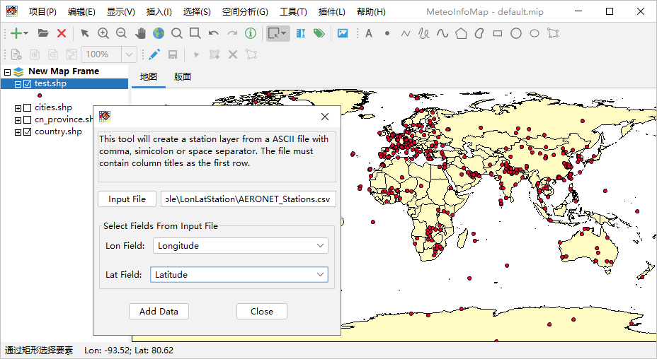

添加X/Y数据¶
对于包含经纬度信息的站点数据可以作为点图层添加到MeteoInfoMap中，数据文件格式是文本文件，第一行是数据每一列的名称，列之间 可以是空格、逗号和分号分隔符，必须包含经度和纬度列，每一行代表一个站点的数据。点击“工具 -> 添加X/Y数据”菜单打开对话框，选 择文本数据文件，设置经度和纬度列，点击Add Data按钮出现保持对话框，输入欲保存的Shapefile文件名，确定即可将站点文本数据文 件保存为Shapefile文件，并在MeteoInfoMap图层管理区添加该Shapefile文件为一个点图层。
